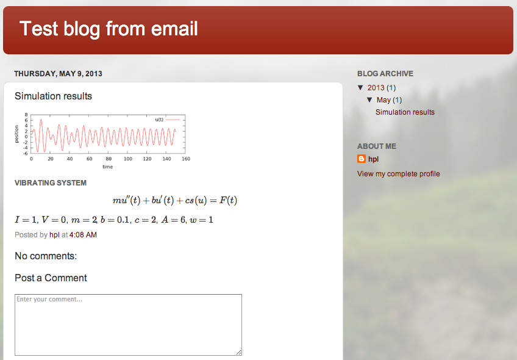

Python has support for formatting and sending emails. This allows a script to send an email notification to ourself and others. We can also use the email feature to automatically post a blog. Especially in cases where you have a script that steers extensive computations over hours, days, or weeks, it is convenient to get an email with a summary of the job and links to the results, or a blog where several people can be notified and also comment on the results. Examples will show how this is easily done.
username@gmail.com on Google with password
secret. The minimalistic code for sending an email from
user@gmail.com to an address someone@cybespace.net via the Gmail
server is then
# Compose email
sender = 'user@gmail.com'
recipients = ['someone@cybespace.net']
msg = """\
From: %s
To: %s
Subject: Let Python send email
This is a test.
""" % (sender, ', '.join(recipients))
# Credentials
username = 'user@gmail.com'
password = 'secret'
# Send email
import smtplib
server = smtplib.SMTP('smtp.gmail.com:587')
server.starttls()
server.login(username, password)
server.sendmail(sender, recipients, msg)
server.quit()
Remark. Having your password in readable form in a readable text file is not a wise idea. A safe way would be to read the password interactively:
import getpass
password = getpass.getpass() # do not echo the input
base64 module. Since base64.encodestring('secret')
is 'c2VjcmV0\n', we could write
password = 'c2VjcmV0'
...
import base64
server.login(username, base64.decodestring(password))
email package for formatting the text and the attachment.MIMEMultipart object consisting of a MIMEText
object for the text and a MIMEImage object for the attached PNG file.
The complete program should be easy to read and mostly self-explanatory.
import os
# smtplib is the tool for sending email
import smtplib
# email is the tool for formatting the message
from email.mime.text import MIMEText
from email.mime.image import MIMEImage
from email.mime.multipart import MIMEMultipart
sender = 'hpl@simula.no'
recipients = [sender, 'langtangen@gmail.com']
# Compose email
msg = MIMEMultipart()
msg['Subject'] = 'Simulation results'
msg['To'] = ', '.join(recipients)
msg['From'] = sender
body_text = MIMEText("""\
Results from simulations:
I=1, V=0, m=2, b=0.1 (linear), c=2, A=6, w=1.
""")
msg.attach(body_text)
# Read image file and attach the content
img_file = open('demo_plot.png', 'rb')
png = img_file.read()
img_file.close()
img = MIMEImage(png)
img.add_header('Content-Disposition', 'attachment',
filename='plot.png')
msg.attach(img)
# Credentials
username, password = open(
os.path.join(os.environ['HOME'], '1', '.emailinfo'),
'r').read().split()
# Send email
server = smtplib.SMTP('smtp.gmail.com:587')
#server.set_debuglevel(1)
server.starttls()
server.login(username,password)
failed_deliveries = server.sendmail(
sender, recipients, msg.as_string())
if failed_deliveries:
print 'Could not reach these addresses:', failed_deliveries
else:
print 'Email successfully sent'
server.quit()
Most modern email applications are capable of understanding HTML-formatted messages, so let us use HTML for nicely formatting of the body of the text. We write a section heading followed by a table with parameters from the simulation. To create the table in HTML, it is convenient to store the parameters in an ordered dictionary: a fixed ordering is essential since we need to run through the keys and values separately in the same order when creating the table.
from collections import OrderedDict as dict
# Use list of (key,value) to ensure correct order
prms = dict([('I',1), ('V',0), ('m',2), ('b',0.1),
('c',2), ('A',6), ('w',1)])
html_table = '<table border=1>\n<tr>'
for prm in prms:
html_table += '<th>%s</th>' % prm
html_table += '</tr>\n</tr>'
for prm in prms:
html_table += '<td>%s</td>' % prms[prm]
html_table += '</tr>\n</table>'
'html' argument to the MIMEText object: it is needed to
make sure the text is rendered as HTML in the email viewer.
The full body of the text in HTML can now be generated by
body_html = MIMEText("""\
<html>
<body>
<h2>Vibrating system</h2>
%s
</body>
</html>
""" % html_table, 'html')
msg.attach(body_html)
It would be attractive to have mathematics nicely rendered in the email, but this author is not aware of email software that can render LaTeX mathematics via MathJax, like we can easily do in HTML and as we take advantage of below.
You need a Google account to be able to follow the recipes below.
blogger.com and the overview of your Google blogs.someblog.blogspot.com.f123x0.
This secret word becomes part of a secret email address
(here username.f123x0@blogger.com)
where you must send the blog text to publish it.
Mark Publish email immediately.
recipients = ['username.f123x0@blogger.com']
username must be replaced by the name that was displayed when
you provided the secret word in the secret email address for posting
blogs. That is all - the subject of the email becomes the heading of
the blog post, followed by the HTML text with a subheading and a table.
The image attached to the email appears in the beginning of the blog post.
Since Google's blogger service allows MathJax in the HTML code, we can
extend the blog content with some mathematics, e.g., the equations
that was solved, together with the values of the parameters typeset
as mathematical formulas ($I=1.5$, $V=0$, and so on).
The parameters are available in an ordered dictionary
prms as above. The appropriate HTML code now becomes
html_code = """\
<html>
<head></head>
<body>
<h2>Vibrating system</h2>
<script type="text/x-mathjax-config">
MathJax.Hub.Config({ TeX: {
equationNumbers: { autoNumber: "AMS" },
extensions: ["AMSmath.js", "AMSsymbols.js", "autobold.js"]
}
});
</script>
<script type="text/javascript"
src="http://cdn.mathjax.org/mathjax/latest/MathJax.js?config=TeX-AMS-MML_HTMLorMML"></script>
$$
mu''(t) + bu'(t) + cs(u) = F(t)
$$
"""
prm_data = ['\( %s = %s \)' % (prm, prms[prm]) for prm in prms]
html_code += ', '.join(prm_data)
html_code += """
</body>
</html>
"""
body_html = MIMEText(html_code, 'html')
msg.attach(body_html)
